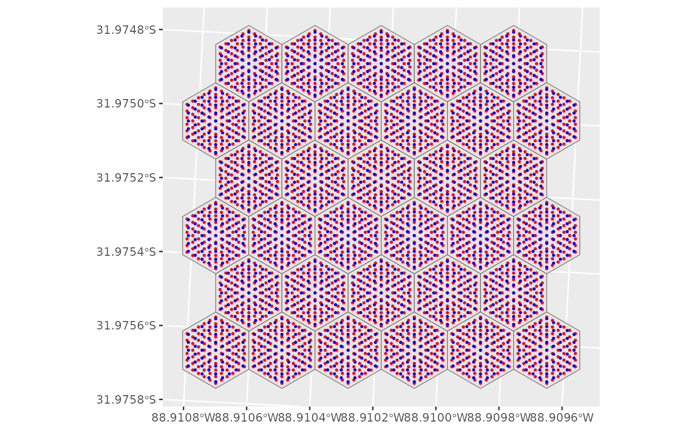

Creates a grid of sites within the hexagon grid cells created by
create_hexes(). These sites can then be sampled with sample_sites().
Arguments
- hexes
Spatial Data frame. Hexagon grid across sampling region. Requires column identifying the hexagon IDs (see
hex_id)- spacing
Numeric. Distance between sites. Units are assumed to be those of
hexspatial data frame.- n
Numeric. Approximate number of sites to create within a hex grid.
- hex_id
Column. Identifies hexagon IDs (e.g., default
hex_id).
Examples
# Get sites by exact within-hex distances
sites_sp <- create_sites(psu_hexagons, spacing = 5)
# Get sites by approximate number of points (but equal spacing among hexes)
sites_n <- create_sites(psu_hexagons, n = 61)
# Same number of sites, but in slightly different spots, because creating by
# n maximizes spacing, but creating by spacing using the exact spacing
# specified.
library(ggplot2)
ggplot() +
geom_sf(data = psu_hexagons) +
geom_sf(data = sites_sp, size = 0.5, colour = "red") +
geom_sf(data = sites_n, size = 0.5, colour = "blue")
